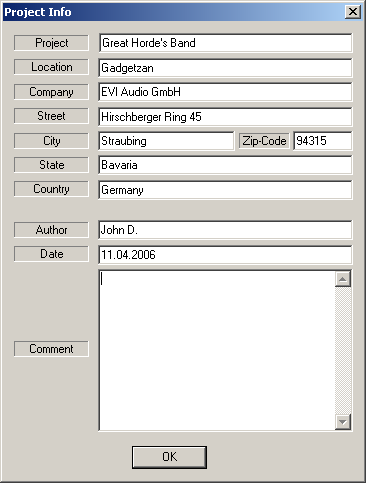

When starting a new project, the Project Info dialogue will appear. This table can be filled in with information about the project. This data is then saved with the project. Open the Project Info of an existing project via Window > Project Info.
